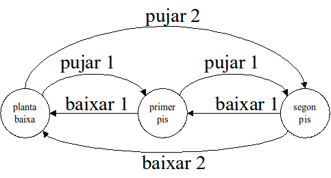

Juguem amb condicionals¶
Vinga, uns quants exercicis més de condicionals, ara que ja saps fer proves amb més control.
En aquests exercicis et pots concentrar només en la definició de la funció que calcula el resultat,
i deixar de banda, de moment, la part d’obtenir les dades, convertir-les al tipus adequat i de
mostrar els resultats a l’usuari. Tampoc no caldrà ni la simulació d’execució ni els jocs de prova
(fitxers entrada*.txt i sortida_esperada*.txt) doncs tot plegat quedarà reemplaçat pels
doctest).
Per descomptat, si vols continuar practicant aquests conceptes, pots afegir-los als teus nous programes. Seran una excel·lent pràctica!
Així, els teus nous fitxers contindran:
- capçalera: què conté aquest fitxer
- definició de la funció
- nom de la funció
- arguments esperats
- comentari descrivint el que fa la funció, què és i de quin tipus és cada argument, i el resultat a retornar
- un o més doctest que provin els diferents casos que pot executar la funció depenent del valor dels arguments.
- el codi que resol el problema
- la clàusula o clàusules return corresponents
Atenció: malgrat no es demana la part d’entrada/sortida, els enunciats es continuen descrivint en funció d’una o més simulacions, per facilitar la comprensió.
Pràctica 1. una calculadora senzilla¶
Desenvolupa una calculadora senzilla que demani a l’usuari un primer operand numèric, una operació entre (+ - * /) i un segon operand, i escrigui el resultat d’aplicar l’operació als operands.
Exemple d’interacció:
$ python3 calculadorasenzilla.py
Primer operand?
4
Operador:
+
Segon operand?
5
4 + 5 = 9
$ python3 calculadorasenzilla.py
Primer operand?
4
Operador:
/
Segon operand?
0
No es pot dividir entre 0
$ python3 calculadorasenzilla.py
Primer operand?
4
Operador:
^
Segon operand?
3
L'operador ^ no està disponible
Pràctica 2. pagaments¶
Desenvolupa un programa que demani a l’usuari que introdueixi un preu en € i la quantitat de € que paga. El programa compararà les dues quantitats i escriurà els € que li falten per pagar o bé els que li han de tornar.
Exemple d’interacció:
$ python3 canvi.py
Preu?
102
Paga?
150
Sobren 48€
$ python3 canvi.py
Preu?
102
Paga?
100
Falten 2€
$ python3 canvi.py
Preu?
100
Paga?
100
No sobra ni falta res
Pràctica 3. la guia de semàfors¶
Desenvolupem un ajudant infantil per decidir que fer davant un semàfor (verd, groc, vermell). El programa demanarà de quin color està el semàfor i segons la resposta recomanarà respectivament passa, espera, o corre!.
Exemple d’interacció:
$ python3 guiasemafor.py
Color?
vermell
Corre!
Pràctica 4. El nombre de fills¶
Desevolupa un progama que demani el nombre de fills de l’usuari i respongui tal i com indica el següent fragment de codi:
Cas nombredefills sigui
< 0: escriu "Error, no pots tenir menys que 0 fills!"
0: escriu "Tot el que t'has estalviat en bolquers!"
1: escriu "Compte de no mimar-lo massa!"
>1 AND <5: escriu "No t'avorreixes a casa eh?"
> 4: escriu "Tu sí fas país!"
Exemple d’interacció:
$ python3 nombredefills.py
Quants fills tens?
1
Compte de no mimar-lo massa!
Pràctica 5. L’ascensor¶
Considerem un ascensor d’un edifici amb planta baixa i dos pisos (primer pis i segon pis) que tingui els següents botons: ‘pujar un”, ‘pujar dos”, ‘baixar un” i ‘baixar dos”. L’ascensor es comporta, a partir dels botons esmentats, segons el següent diagrama de transició d’estats:
Es demana desenvolupar un programa que simuli el funcionament d’aquest ascensor.
El programa demanarà el pis en que es troba i el botó que es prem, i mostrarà el nou pis.
Cal comprovar que els botons i les plantes siguin correctes. En cas que no ho siguin, el programa mostrarà un missatge d’error en comptes del nou pis.
Exemple d’interacció:
$ python3 ascensor.py
pis?
planta baixa
botó?
puja un
primer pis
$ python3 ascensor.py
pis?
segon pis
botó?
puja un
error
Ref. IP10.6